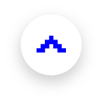
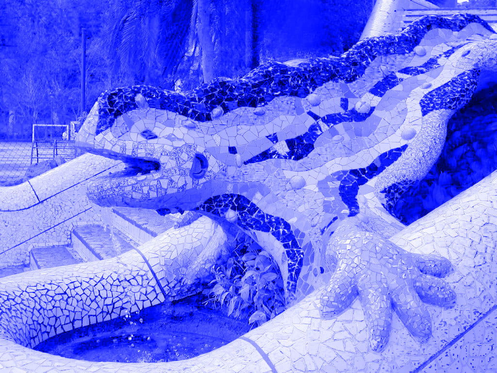

LANTOUR
Min03
Min02
Min01

Min01 : Photo
구엘 공원 > 사그라다 파밀리아
41⁰24’52”N 2⁰09’09”E
41⁰24’13”N 2⁰10’27”E
위치명에 마우스를 올리면 위치 정보가 표시됩니다.
LANTOUR 1분차에는 가우디의 건축물을 구경하실 수 있습니다.
우측 상단의 버튼을 클릭하면 카메라가 활성화되니
사진을 찍으며 편하게 구경하시기 바랍니다.
CAMERA
찰칵
찰칵
찰칵
찰칵
찰칵
구엘 공원
이 곳은 안토니오 가우디의 작품 중 하나로
모자이크 장식의 건축물에서 곡선의
아름다움을 한껏 느끼실 수 있답니다.
어서 카메라를 준비해주세요.
하나, 둘, 셋, 김치!

사그라다 파밀리아
까탈루냐 모더니즘으로 지어진 최고의 대표작으로 손꼽히는
사그라다 파밀리아 성당은 가우디의 유작으로
가우디 사망 100주년인 2026년에 완공될 예정이랍니다.
가까이서 보니 목이 빠질 것 같지 않나요, 여러분?
그럼 이제 사그라다 파밀리아의
빙글빙글 계단을 타고
여행 2분차로 넘어가봅시다!